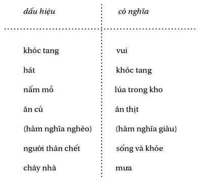
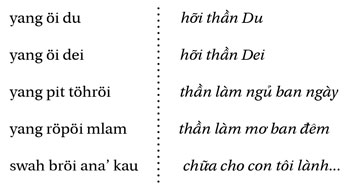

Bachelard (Trái đất và những mộng mơ của ý chí) đã chỉ ra cấu trúc “từng trang” của giấc mơ - cũng như của huyền thoại - và ghi chú rằng giấc mơ phải được giải thích bằng giấc mơ, một chuỗi hình ảnh chiêm bao có thể tương ứng với một dãy liên kết trong đời sống ở trạng thái thức - về huyền thoại cũng vậy. Trong giấc mơ, như chúng ta sẽ thấy trong các ví dụ sau đây, một thành tố không có ngữ cảnh có thể không có ý nghĩa thật rõ ràng, nó thường mở ra khả năng hai lối giải thích trái ngược nhau.
Điều thấy trong chiêm bao, không thể tách rời với việc giải thích nó đóng một vai trò - còn hơn là quan trọng: một vai trò hàng đầu - trong đời sống Giarai. Sau đây là vài trường hợp:
- Trong trường hợp chuyện hỏi cưới, giấc mơ trong đêm tiếp đó chỉ ra là nên nhận lời hay không;
- Nó cho phép chính thức hóa một điềm triệu, hay nguồn gốc yang của một vật bất thường tìm thấy;
- Nó chỉ rõ vật lễ phải dâng cúng trong trường hợp đau ốm hay gặp khó khăn nào khác;
- Những cuộc kết ước trong giấc mơ (với một người bạn - kết nghĩa anh em hay với “bố mẹ” nuôi) phải được thực hiện trong thực tế;
- Nó có thể giúp truy tìm và xác định một người ma lai röhung ;
- Gần như bao giờ nó cũng là nguồn gốc của nghề thầy bói và thầy lang và, còn hơn thế nữa, là một kỹ thuật chữa bệnh, sẽ nói đến sau đây.
Hình ảnh bị một dòng nước cuốn, mang đi, trôi dạt, vừa là ký ức đầu tiên của nhiều người Giarai và là hình ảnh chiêm bao thường gặp hơn cả; nó được đoán là dấu hiệu có một sinh thể, một quyền năng, đang tấn công ta: thần yang , ma lai röhung , hay ma-người chết atau; ở một đứa trẻ rất bé, sinh thể ấy mang hình một con người màu đỏ trên một chiếc xe đạp đỏ. Bao giờ cũng là một kẻ muốn làm ta lo sợ.
Màu đỏ, màu lễ hội, màu tuyệt diệu, là một tín hiệu nước đôi, mà giá trị có thể đảo ngược (lễ hội trở thành sự hành hung), và không chỉ trong giấc mơ - với những người sử dụng chữ viết, một bức thư viết bằng mực đỏ được hiểu là hăm dọa. Tất cả những gì người ta thấy trong mơ màu đỏ, đều là dấu hiệu của máu, của tai họa: nằm mơ thấy chăn đỏ, là báo hiệu một vết thương nặng hay cái chết của người đắp chăn; cưỡi một con ngựa màu hung, hay trắng (ở đây màu trắng là chỉ dẫn tương đương), có nghĩa là người cưỡi ngựa (người nằm mơ hoặc một người khác ta thấy cưỡi ngựa) sẽ chỉ gặp toàn khó khăn và đặc biệt ở ruộng của anh ta, lúa sẽ lép, vô dụng. Trái lại, cưỡi một con ngựa đen là báo hiệu một công việc thành đạt, dù có mệt mỏi, và một vụ mùa bội thu. Ở đây ta thấy một trường hợp đầu tiên về sự đảo lộn các tín hiệu, màu đen, trong đời sống hằng ngày, mang nội hàm tiêu cực.
Mơ thấy rắn thì không chắc chắn; nếu chỉ thấy một lần, ấy là điềm tốt; thấy nhiều lần, một trong các đứa con của ta sẽ bị ốm hay chết, trong trường hợp rắn cắn. Mơ thấy cưới một người nào đó cũng vậy: một lần thì chẳng là gì cả, chỉ lặp lại mới có nghĩa; nếu là người đàn bà mơ về người đàn ông, thì đấy là yang , người đàn bà ấy sẽ lấy yang : tức là chết; nếu một người đàn ông mơ về một cô gái, thì đấy là một cô gái-rừng, cô ấy sẽ mê hoặc anh ta và anh ta sẽ chết. Sự lặp lại của các hình ảnh và ngữ cảnh của chúng là rất cần thiết cho việc giải mộng. Mơ bắt được cá thì tùy thuộc vào số lượng bắt được: nếu chỉ có một vài con, thì đó là sẽ được đúng chừng ấy đồng bạc, đồng thời có lúa tốt ngoài đồng; nếu cá nhiều, thì chúng là những vụn gỗ tách ra khi người ta đẽo một thân cây để làm quan tài (cho mình hay cho một người khác, điều này không chắc). Trong loại hình ảnh nước đôi này có chuyện đánh chiêng, bao giờ cũng là dấu hiệu của một “vụ việc” (tư pháp): nếu tiếng chiêng mà đối tượng (chính người nằm mơ hoặc một người khác) đánh rõ và đúng, thì lời nói của anh ta sẽ rõ và đúng, anh ta sẽ thắng kiện; nếu không, là thua. Hình ảnh sứt răng, bao giờ cũng thuộc điềm xấu, phải được làm rõ: răng hàm là một già làng chết, các răng khác thì là cái chết của một đứa bé thân thuộc.
Các tương liên mang tính truyền thống giữa hình ảnh và ý nghĩa ấy còn phải được gắn với những kết hợp nghĩa hay âm thanh: mơ thấy uống rượu ghè (chất lỏng uống nhiều) là dấu hiệu mưa; cũng trong loại đó là việc chuyển từ sự đúng giọng của chiêng sang sự đúng đắn trong lời nói. Mơ thấy chó ( asau) là dấu hiệu có chuyện đáng xấu hổ ( mlau ), cũng như ngựa ( aseh ) đem lại sự mệt mỏi ( dlèh ), điệp vần thường là cái cớ để kéo lại gần nhau trong văn học truyền khẩu.
Càng nhiều hơn, và càng quan trọng cho phần tiếp sau, là các trường hợp trong đó hình ảnh “đảo ngược lại”:

Ví dụ đại diện trên đây, nằm trong số nhiều ví dụ khác, sự lặp lại của hình ảnh chết là đáng chú ý; không có gì đáng ngạc nhiên vì, như sẽ nói sau đây, chính cái chết được coi như là một sự trở lại và giấc mơ đưa chúng ta lên con đường trở về chốn ấy.
Người ta thường bảo giấc mơ khi ngủ ban ngày chỉ cho những hình ảnh mờ; trong giấc ngủ ban đêm, nếu ngủ rất sâu, giấc mơ chỉ cho thấy những hình ảnh trộn lẫn vào nhau, không thể kể lại khi thức dậy; nếu giấc ngủ nhẹ hơn, giấc mơ sẽ rõ ràng, mạch lạc hơn, dễ kể lại. Còn nằm mơ thấy mình mơ, giấc mơ trong giấc mơ (röpöi dua tal, mơ hai tầng), là dấu hiệu chính mình sẽ chết. Giấc mơ ban đêm, một cái nhìn sáng rõ “bởi vì đúng là ban đêm; hồn ( böngat ) đi (nao) mạnh (pral) và đến vùng của những người chết ở nơi đấy đang sáng”. Trong khi ngủ, hồn ta “ra đi”, về hướng tây và hướng của những người chết; chính vì ở đấy là ngày, khi ở ta đang là đêm, cho nên giấc mơ đêm khiến ta nhìn thấy rõ ràng, và đồng thời lại thấy ngược. Người ta nói về một người đang ngủ sâu là anh ta “đã ra đi”, đúng hệt như nói về một người chết.
Người Giarai, đã qua trải nghiệm của giấc mơ, gắn hiện tượng ấy với hiện tượng chết, mà anh ta tưởng tượng bằng ngoại suy. Giấc mơ là một cái chết (giấc mơ cuối cùng, cuộc ra đi cuối cùng) mà người ta trở về. Có sự đi ra của hồn và cuộc viễn du đến một vùng xa. Röpöi , mơ, và rögom , người chết, người đã khuất, đều cùng có tiền tố rö đánh dấu sự đối lập giữa hai yếu tố trái ngược nhau. Các điều kiện thức, một mặt, mặt khác là các điều kiện ngủ và chết, đối nghịch với nhau như ngày với đêm, ánh sáng với bóng tối, phương Đông với phương Tây.
Trong giấc mơ của mình, bố-cái-Hiang, ốm và sắp chết, thấy mình ở giữa những người chết đang lao động. Sau đây là một ví dụ khác, không có sự trở về:
Ông ấy ngủ đã bốn hay năm ngày nay; ở nhà ông, người ta tưởng ông đã chết, mặc dầu ông ta còn nóng, dấu hiệu sống duy nhất còn lại ở ông. Trong thực tế ông đã ra đi [nao lèih] đến nhà các bạn ông, là các thần núi. Cơ thể ông không hề động đậy nữa, người thân của ông đưa ông ra khỏi làng, đến chỗ họ thường hỏa táng những người chết [cách làm hiếm thấy, chỉ còn ở đôi nhóm nhỏ]. Lúc đó các thần nói với ông ta: “Người ta đang định đốt ông ở kia đấy, về nhanh lên mà ngăn lại!” Ông ta cưỡi ngựa đến chỗ hỏa táng; chậm quá rồi, cơ thể ông đã cháy; ông không ngăn lại được. Nhưng, không nhìn thấy chính ông, người ta vẫn nghe rõ ràng tiếng lạc ngựa của ông. Ông lại ra đi, lần này đi hẳn, không trở lại được nữa (Tl. 1. 67).
Huyền thoại sau đây diễn đạt một cách mạnh mẽ sự đảo ngược tình thế; người bố, đã chết, bố và con trai người này trông thấy người kia đã chết:
Bố cậu ta đã chết. Cậu con trai làm một ngôi nhà mồ đẹp cho lễ bỏ mả; nhưng, để làm việc đó, cậu phải đi tìm một con trâu. Cậu bèn lấy các nồi đồng mang đi đổi ở các làng. Người ta không mua nồi đồng của cậu; cậu ta vẫn không có trâu. Cậu đi đến một nơi có rất đông người đang chuẩn bị một nhà mồ. Cậu đã đi đến xứ người chết, bố cậu cũng có ở đấy. Hai bố con nhận ra nhau. “Ô, bố tôi đang ở đây này! - Con đi đâu đấy? - Con đi đổi trâu, để làm nhà mồ cho bố! - Thằng bé này hỗn, sao mày lại rủa tao? Chính là tao đang làm nhà mồ cho mày và mẹ mày đã chết rồi đây này!”Hai bố con cãi nhau, người này bảo người kia đã chết rồi. Cậu con bèn nắm tay bố và cố kéo tay bố lôi về làng của họ. Người bố biến thành con diều mốc; cậu con ôm con chim ấy trong tay. Khi họ về gần đến làng có thể nghe được tiếng người làng nói, người bố biến thành than gỗ, tro. Người con vẫn ôm trong tay. Khi họ sắp đi vào làng, tro biến thành hạt sương: cậu con không thể giữ được nữa, hạt sương biến mất. Cậu ta quay lại và cố tìm ông bố để đưa về làng. Đến lần thứ ba ông bố bảo cậu: “Thôi con ạ! Bố chết thật rồi (atau). Nếu con quý bố đến như vậy, thì hãy phá hết mọi thứ trong nhà đi, đập vỡ hết mọi thứ đi và đến với bố, cùng với mẹ con!” Cậu con và người mẹ phá vỡ hết mọi thứ, ngã xuống chết; như vậy họ có thể sang phía bên kia và lại được sống cùng nhau (Hj. 83).
“Đêm nay, sẽ là ngày đối với người chết; nửa đêm sẽ là đứng trưa của họ”. Người chết được chôn theo tư thế như khi con người nằm ngủ: nằm ngửa, đầu quay về hướng đông. Nằm như vậy, cái böngat , khi trở dậy để “ra đi”, sẽ quay mặt về hướng tây, để đi về hướng mặt trời lặn - hướng của các hồn đi ra và xứ sở của những người chết. Giữa thế giới của người sống và thế giới của người chết có một sự liên tục, chỉ khác nhau về dấu, cũng giống như đêm tiếp theo ngày sau khi mặt trời “rơi xuống” ( lé ), là lúc nó mọc lên ở phía bên kia, nơi là ngày. Sau cuộc đi ra ban đêm, böngat du hành về phía ánh sáng.
Để cho böngat chuyển hẳn sang phía bên kia, thì cái giá đỡ pô của nó phải hủy hoại hoàn toàn (xem Tl. 1. 67); đối với các đồ vật mà con người cần dùng ở bên kia và các gia súc muốn đưa theo cho họ cũng vậy: chúng chỉ có thể chuyển sang bên kia sau khi bị phá hủy (Tl. 3. 67). Từ đó mà có tục đặt những đồ bị đập vỡ trên mộ và giết một con trâu ở đấy; cũng giống như khi dâng cúng yang và kết quả cũng như vậy: con vật, do con người ăn cũng cùng lúc có thể sử dụng ở phía bên kia. Hiện tượng này khiến ta nhớ lại các cô gái-rừng và con thú sa bẫy của người thợ săn, mỗi người ăn bên phía mình, cũng như hổ và người làng đồng thời cùng ăn một con lợn ấy. Như vậy, ta hiểu hơn những cái mà người Giarai gọi là người chết-ma atau, các thần yang , ma lai röhung (như ta có một ví dụ trong câu chuyện nàng Thảo, Hj. 110), tất cả những sinh thể, ít ra do một phương diện nào đó của họ, thuộc về phía bên kia, đều có một hay hai chân ở cõi bên kia.
Việc hủy hoại chỉ là biểu lộ sự lật ngược cần thiết cho việc chuyển sang thế giới bên kia; của cải sang bên kia vẫn nguyên vẹn, cũng như người chết sang bên đó lại thành sống, trong khi theo cách nhìn của họ chúng ta là những người chết. Ánh sáng bên này, thì bóng tối bên kia; ngày vẫn tiếp tục ở nơi khác, cũng như cái tôi thường trực mãi vượt qua các vẻ bên ngoài. Cuộc sống ở thế giới bên kia chỉ là cuộc sống này lật ngược, người chết làm mọi việc theo kiểu ngược lại (đi ngược đầu xuống đất,...), hình ảnh đảo ngược. Ở âm phủ người ta chết lần thứ hai - khi đó người ta không thể là “ma” nữa và người ta để cho người sống được yên ổn - sau đó người ta trải qua những chuyển đổi (xem Hj. 83): người ta “trở thành” diều mốc, con chim hay lủi trốn, khó bắt và vô dụng, rồi thành than (tro) có thể nắm trong tay nhưng chẳng dùng được vào việc gì, cuối cùng là giọt sương, thứ hơi ẩm không thể nắm lấy được bốc lên từ đất vào mùa khô, rất tốt cho cây cỏ bị mặt trời thiêu cháy và là tín hiệu của sự đổi mới, của mùa xuân sắp trở lại. Diều mốc, than và sương, người chết chỉ “trở thành” như vậy trong cái nhìn của chúng ta và trong một thời gian; đấy là một lối hình dung, dùng cho người sống.
Cái xua-ruồi pönüh cũng là hình ảnh và, hơn thế nữa, là biểu tượng cụ thể: hai cái que vuông góc với nhau trên đó có giăng những sợi bông vải thành hình vuông. Sau khi những người đàn bà khóc tang đã khua cái dụng cụ đó trên thi hài người chết, trong nhà, họ bẻ gãy nó theo đường chéo của hình vuông và khi ra đến nghĩa trang họ đặt hai cái tam giác ấy vào trong quan tài phía bên này và bên kia thi hài, để chúng thành “những chiếc cánh” (jing cang nyu) của người chết; trong khi làm việc đó, các bà còn nói: “Đấy là để chỉ cho anh ta biết anh ta phải trở thành cái gì khi đã sang hẳn bên kia.”
Cá nhân là một mắt xích trong một dãy liên tục. Khi chức năng mắt xích của anh đã hoàn thành, về phía trước vì anh đã để lại người nối dõi, về phía sau vì anh đã gặp lại tổ tiên, thì anh có thể mất đi cá tính mắt xích, cá tính của một số thứ tự trong một dãy của mình; song “cái tôi” của anh vẫn còn, nhưng là còn một cách khác. Vượt qua những biến đổi nhìn thấy được, trong mỗi con người Giarai có một sự liên tục sâu xa của sinh thể, như là ở trong lòng một gia đình, mãi mãi đổi mới lại và mãi mãi vẫn nguyên. Đấy cũng là hình ảnh của đời sống Giarai trong lịch sử: nó tiến hóa, nó biến đổi, trong khi vẫn là chính nó.
Böngat đi vắng lâu, đấy là ốm; nếu, vượt quá một điểm giới hạn, böngat không trở về nữa, thì đấy là chết. Cạnh những tình huống đó, mà mỗi cá nhân trước sau rồi cũng biết, còn có những “cuộc đi ra ngoài” ở đấy họ gặp các vị thần làm cho đối tượng trở thành thầy bói-chữa bệnh. Bao giờ khởi nguồn cũng là một giấc mơ, thường là một căn bệnh; đôi khi những giấc mơ về sau được dùng làm kỹ thuật chữa bệnh.
Ông tôi là thầy bói. Sau khi cưới vợ, tôi mơ thấy một vị thần cho tôi năm hạt gạo, một cái bát, một chiếc vòng, một cây nến, một viên thạch anh. Sau cơn mơ ấy, tôi bị ốm; tôi cúng một con lợn và một ghè rượu cho vị thần đã khiến tôi nằm mơ. Tôi lành bệnh và tôi có thể chữa bệnh cho người khác. Tôi nhìn vào viên thạch anh trong mơ để thấy nguyên nhân căn bệnh; cây nến giúp tôi soi cái hạt [nó cụ thể hóa căn bệnh]; chiếc vòng tôi khua trên thân thể người bệnh để trục cái hạt ra; tôi đựng cơm người ta cho tôi trong bát. Tôi khấn thần của tôi là Dam Dua [thần chiến tranh ở núi Hödrung] (Bố-cái-Hnyèh, Tl. 9b. 64).
Khi tôi còn nhỏ [khoảng mười hai tuổi, theo đứa bé trong làng được dùng làm quy chiếu] tôi bị ốm; sự việc bắt đầu như vậy. Ông ta bắt tôi, ông ta đi vào rừng; tôi đi theo ông. Ở đấy tôi thấy ông hình hổ. Tôi ở lại bảy ngày và bảy đêm trong rừng. Ông nói với tôi: “Con sẽ làm thầy lang- soi với cây nến”. Từ đó tôi bắt đầu chữa bệnh trong làng tôi; tôi nổi tiếng, người ta gọi tôi từ khắp nơi. Tôi đốt nến; nếu nó đứng thẳng, người bệnh sẽ khỏi; nếu nó cong xuống trong khi chảy ra, đấy là dấu hiệu chết. Tôi cũng đọc trên vòng của người bệnh; nếu tôi nhìn thấy ở đấy một cái cầu vồng, đấy là một vị thần đòi phải cúng. yang của tôi dạy tôi không được nhận tiền công, chỉ được uống rượu sau khi đã hành nghề, không bao giờ được uống trước. Một hôm, bố của một người bệnh mang đến cho tôi một con lợn; ít lâu sau con anh ta chết; từ đó tôi không nhận bất cứ thứ gì nữa. (Diöm, Tl. 7. 66).
Lúc bé, tôi trông thấy một con rắn to tướng. yang muốn tôi chui vào đấy, cái böngat của tôi sợ. Cuối cùng tôi đã chui vào, từ miệng đến đuôi; sau đó con rắn dựng đứng lên, tôi trườn ngược lên dọc bên trong thân nó và thoát ra đằng đầu. Thức dậy tôi khóc. Về sau tôi lại mơ thấy yang; ông ấy cho tôi một cây nến, ông muốn tôi soi cho những người bệnh. Rồi tôi bị ốm, đến gần chết. Bố mẹ tôi cầu cúng, mới biết là vì giấc mơ mà cuối cùng tôi đã quyết định kể lại cho họ nghe. Bố mẹ tôi cúng một con gà và một ghè rượu, rồi một con lợn và một ghè rượu, cuối cùng là một con lợn và ba ghè rượu. Bố tôi khấn:

rồi nó sẽ làm tất cả những gì các thần bảo!
Tôi khỏi bệnh. Từ đó, tôi soi cho người bệnh. Khi gặp một trường hợp khó, tôi cầu các thần báo mộng cho tôi (Htlat, Tl. 9a. 64 - một phần câu chuyện của Htlat, người “thấu thị” đã có ở chương về các bà lang).
Ba bằng chứng trên đây đều được xây dựng trên cùng một mô hình, lấy lại mô hình của các bà đỡ-nắn xương; nhưng ở đây, những người thầy lang thuộc một trình độ chuyên môn hơn, họ được gọi là “thầy bói-soi” ( pöcörang , soi sáng, ngoại động từ, được lập bằng cách thêm tiền tố vào cörang , soi, là nội động từ), người ta cũng gọi họ là “thầy bói đèn” vì họ có cây nến giúp họ nhìn thấy được căn bệnh ở đâu. Việc họ không chịu nhận tiền công (đôi khi chính họ trả tiền, khi thất bại) cải chính những lời buộc tội rất thường đổ lên họ, do những người ngoại quốc, cho rằng những người “phù thủy” này đã làm giàu trên sự dễ tin của nhân dân nghèo khổ. Nếu lòng tin chữa lành được bệnh (và điều đó đôi khi đã xảy ra) thì còn trách họ nỗi gì? Bằng chứng sau đây là của một người thầy bói dùng giấc mơ để chữa bệnh - một trường hợp thật khác, như chúng ta sẽ thấy.
Khi tôi còn nhỏ, tôi mơ thấy ông tôi, tên là Mding, ngày xưa là thầy bói, bảo tôi: “Này, cháu, cầm lấy! Đây là nến, bát gạo, lá xoan cho cháu!” Giấc mơ ấy lặp đi lặp lại nhiều lần. Khi tôi đến tuổi thiếu niên, tôi lại thấy ông tôi, ông bảo: “Cháu hãy há miệng ra, để ông nhổ vào đấy! - Sao ông lại nhổ vào miệng cháu? - Để cháu cũng trở thành thầy bói như ông!” Một thời gian sau, mẹ tôi ốm nặng; cúng bao nhiêu cũng không ăn thua. Tôi mới nhớ lại các giấc mơ hồi nhỏ và lúc thiếu niên của tôi, tôi tự bảo: “Nếu tôi phải trở thành thầy bói, thì thần hãy cho tôi được nhìn thấy mẹ tôi bệnh vì cái gì!” Tôi nằm ngủ để thần cho tôi mơ; tôi liền nghe thấy: “Tất cả các thứ con cúng để cho mẹ con lành bệnh đều vô ích; chính là yang của nhà con đã ám vào mẹ con. Để trục ra, con phải cúng một con heo nái và năm ghè rượu; bà ấy sẽ khỏi!” Đúng như vậy.
Sau chuyện đó, tôi đi gặp thầy bói bố-thằng-Tué, để ông xác nhận nghề nghiệp của tôi. Ông đã đọc lời khấn như sau: “Tôi gọi các thần-mẫu, các thần-khai tâm, khiến con người ngủ ban ngày và mơ ban đêm! Đây là một con lợn và ba ghè rượu dâng các thần. Hãy làm cho cháu thần là thằng Areng có thể soi và nhìn thấy đúng, bảo cho biết phải làm gì. Nếu người ốm phải chết, thì bảo chết; nếu người ốm phải sống, thì nói sống! Đây là cháu Areng của thần, hãy làm cho nó phát đạt, cho nó sống đến già!” (Areng, Tl. 9c. 64).
Người ông của thầy lang Areng nọ ( pöjau Areng, cũng như ta gọi bác sĩ Dupont - trong thực tế areng có nghĩa là “cua”) được đồng nhất với một vị yang ; trong trường hợp chính xác này, chính ông, chứ không phải là một vị thần núi, không những đã khởi động giấc mơ đầu tiên, mà còn tiếp tục gây ra các giấc mơ để cậu cháu ông “nhìn thấy” được những gì anh ta phải làm để có thể chữa lành bệnh. Lời cầu khấn các thần “làm cho ngủ ban ngày và mơ ban đêm” ta đã được nghe trong một lời chứng trước - như vậy hai loại pöjau này là gần nhau, cũng như câu chêm “soi sáng và nhìn đúng”; vả chăng người ta thường bảo người thầy bói - “nằm mơ” rằng ông ta là thầy bói - “soi sáng” và ngược lại.
Thầy bói - “nằm mơ” ( pöröpöi , gây ra một giấc mơ, được lập bằng cách thêm tiền tố vào röpoi , mơ) làm như sau: hoặc ở nhà người bệnh hoặc trở về nhà mình, ông nằm ngủ (ban ngày hay ban đêm) với một đồ vật của người bệnh; trong khi ngủ, böngat của ông du hành đến một cõi bên kia nguy hiểm; ông gặp böngat của người bệnh đang bị một yang bắt; thức dậy, ông sẽ biết nguyên nhân bệnh và sẽ bảo cần phải cúng như thế nào.
Dầu là thầy bói soi hay thầy bói nằm mơ, các thầy bói chữa bệnh cũng giống nhau, họ phải tìm ánh sáng. Thân thể người bệnh (cũng như gia đình anh ta, bất lực) đang ở trong bóng tối (dù đang ngày hay đêm), böngat của anh ta ra đi quá xa, đến một vùng ánh sáng mà cái böngat của người thầy bói sẽ nhìn được rõ, hoặc là bằng ngọn lửa nến (hình ảnh tượng trưng), hoặc bằng cái nhìn trong mơ (hình ảnh chiêm mộng). Vấn đề là chuyển sang phía bên kia, nơi đang là ngày.
Tất cả những cái đó chỉ là một giai đoạn trong cuộc du hành của người thầy pháp chính thức, người chuyển sang “phía bên kia” một cách có ý thức. Trong quan điểm của người Giarai không có sự tách biệt rõ ràng giữa giấc mơ, cuộc du hành của thầy pháp và cái chết (đều là những vụ đi ra của böngat ). Chẳng có gì định trước cả, người ta có thể “trở về” hoặc không.
Chú thích : Trước kia tôi cũng thường phạm sai lầm như bao nhiêu người khác, so sánh hiệu quả của các thứ thuốc, mà chúng ta có ở Việt Nam, với hiệu quả của việc chữa bệnh mà ta dễ cho là trò bịp. Nhân danh lý trí (hay đức tin) các nhà truyền giáo nghĩ rằng cần truy nã các pöjau , đi trước chính quyền là những người đã kiên quyết loại trừ tất cả những gì khiến lòng tôn thờ Khoa học của họ phải xấu hổ và phủ bóng tối lên nó. Nhất là về chuyện thuật thầy pháp chính cống, vốn là cảnh diễn và liệu pháp, tôi rất nghi ngờ giá trị của các phương pháp “khoa học” - dược phẩm hóa học và tuyên truyền vô tuyến - để giải quyết các vấn đề về tâm thần cơ thể ở những dân tộc sống “bên lề” (và những dân tộc khác...), nếu không phải là người ta muốn thanh toán một cách căn bản vấn đề của các dân tộc này bằng cách tước đi của họ mọi bản sắc văn hóa, để xếp họ vào hàng ngũ những người lao động rô-bốt hiện đại.